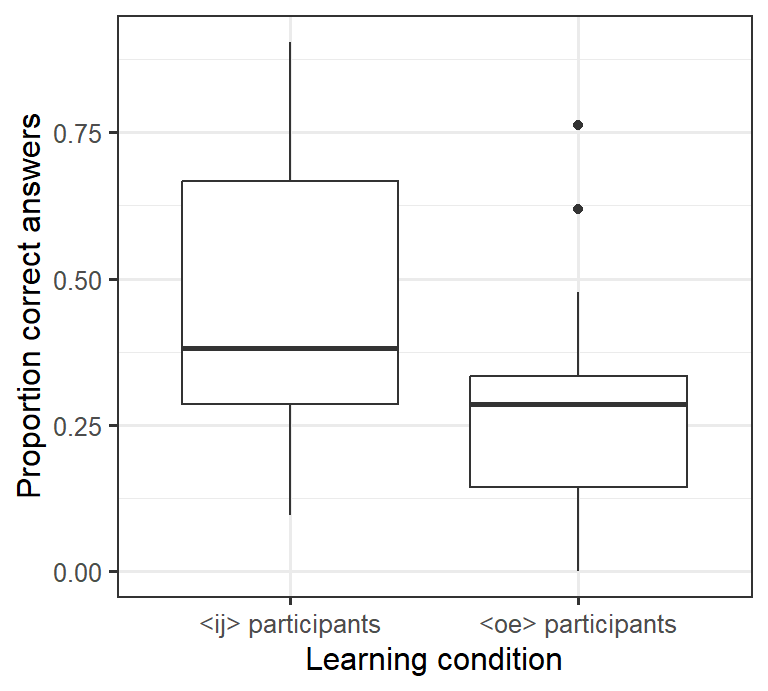
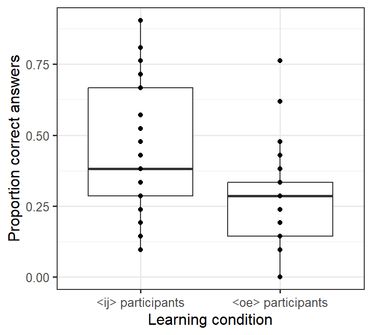

4 Week 4: Boxplots deluxe
4.1 Goals
- You’ll learn how to add the individual data points underlying a boxplot to this boxplot. This makes for more informative graphs, particularly for smallish datasets (up till 100–150 observations or so).
- To do this, we’ll use a technique known as jittering to make overlapping datapoints more visible.
4.2 Tutorial
Run-of-the-mill boxplots are useful when you want to get a quick idea of the distribution of the data in different groups (see last week).
However, identically looking boxplots can represent markedly different distributions!1
For this reason, it can be useful to draw boxplots that also show the individual data points rather than merely the distribution’s quartiles. Such visualisations are particularly useful when the dataset isn’t prohibitively large (so that you can actually make out the different data points).
In the following, I assume you’ll work within your R project
and that you have the tidyverse and here packages. Always
use scripts rather than typing your commands directly to the prompt.
- Read in the dataset
VowelChoices_ij.csv(see last week). - Draw the boxplot of last week’s tutorial again.
ggplot(data = d_box,
aes(x = LearningCondition, y = PropCorrect)) +
geom_boxplot() +
xlab("Learning condition") +
ylab("Proportion correct answers") +
theme_bw(12)- We can add another layer to this graph by
inserting the command
geom_point()into the ggplot call.geom_point()draws the data points as, well, points and doesn’t summarise its quartiles likegeom_boxplot()does. Since we insertgeom_point()aftergeom_boxplot(), these points will be plotted on top of (rather than underneath) the boxplots.
ggplot(data = d_box,
aes(x = LearningCondition, y = PropCorrect)) +
geom_boxplot() +
geom_point() + # draw individual data points
xlab("Learning condition") +
ylab("Proportion correct answers") +
theme_bw(12)
If you count the number of points in this graph, you’ll notice that there are fewer points (28) than there were participants (80). The reason is that several participants obtained the same result, and their data are plotted on top of each other. For this reason, it makes sense to move the plotted points a bit apart (jittering). Here we can move the points apart horizontally. To do this, we need to specify the
positionparameter inside thegeom_point()command.- We can specify both
width(horizontal jittering) andheight(vertical jittering). Fiddle with the setting forwidthto see what happens if you change it. I’d leave the value forheightset to 0 (= no vertical jittering) so that we don’t depict proportions of, say, 0.24 as 0.28. - Notice that I’ve additionally specified the
outlier.shapeparameter in thegeom_boxplot()command asNA(not available). This prevents thegeom_boxplot()command from plotting outlying data points so that these points aren’t plotted twice (as part of the boxplot and as an individual data point).
- We can specify both
ggplot(data = d_box,
aes(x = LearningCondition,
y = PropCorrect)) +
geom_boxplot(outlier.shape = NA) + # don't plot outliers twice
geom_point(position = position_jitter(width = 0.2, # horizontal jittering
height = 0)) + # but no vertical jittering
xlab("Learning condition") +
ylab("Proportion correct answers") +
theme_bw(12)
- To make the individual data points more visually distinct, we can change the plotting symbol by changing the
shapeparameter. This overview shows which plotting symbols are available:

Empty circles tend to work well (shape 1):
ggplot(data = d_box,
aes(x = LearningCondition,
y = PropCorrect)) +
geom_boxplot(outlier.shape = NA) +
geom_point(position = position_jitter(width = 0.2,
height = 0),
shape = 1) + # 1 = empty circles
xlab("Learning condition") +
ylab("Proportion correct answers") +
theme_bw(12)
(Shapes 21 through 25 resemble shapes 1 through 5, but they can be coloured in.)
4.3 Exercise
The dataset Wagenmakers_Zeelenberg.csv contains data from a study by Wagenmakers et al. (2016).2
In this experiment, participants were instructed to either smile or pout (Condition)
as they judged the funniness of four cartoons on a 10-point scale (0–9).
The mean rating per participant can be found in the creatively named column MeanRating.
The research question was if smiling participants gave higher funniness ratings than pouting ones.
Your task: Compute the number of participants in each condition as well as the mean MeanRating per condition. Also draw boxplots (with individual data points) on the basis of which this research question
can be answered. Label your axes appropriately. Save a graph you’re happy with
using ggsave(). Submit both your graph and the compiled HTML report.
References
See http://goo.gl/v4vYvx for an example.↩︎